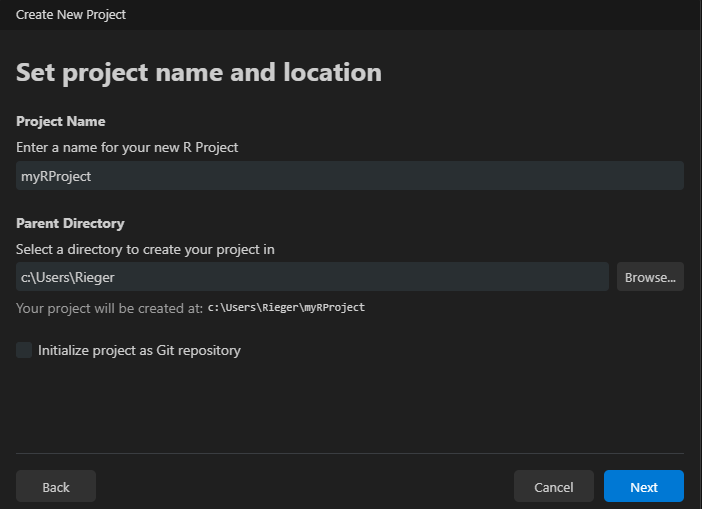

- 0
-
Use
c()function to combine any values into a vector/list (here: character vector). - 1
-
file.path()function construct platform-independent file paths. - 2
- No subdirectories in these two directories.
Implement a Project-Oriented Workflow
Abstract
This part gives a brief introduction in how to implement a project-oriented workflow for any data-related project with R.
Definition
TipA project-oriented workflow begins by creating a folder (working directory) to store all files related to a specific project.
This approach provides several benefits, such as:
improved organization of project-related files (e.g., data, scripts, results, and documentation)
use of relative file instead of absolute paths (no need for
setwd()which ensures portability to other systems)ease implementation of package and environment management (e.g.,
renvpackage for R )
Implementation
The easiest way to implement a project-oriented workflow is to use an Integrated Development Environment (IDE) such as RStudio or Positron. These IDEs offer built-in features that help with creating and managing projects efficiently.
CautionExercise (5min)
Create a working directory (i.e., project folder) through your IDE.
Create a project: File > New Project....
Select project type.
Choose a location (typically a folder called “projects”) and create a new directory within it.
Create a project: File > New Project... and select project type.
Choose a location (typically a folder called “projects”) and create a new directory within it.

Select R version.
In general, it is recommended to use a version control system (e.g., Git ) and a library/package (e.g., the renv package, Ushey & Wickham, 2024 in R) to create reproducible environments (see below).
For more see R for Data Science by Hadley Wickham & Garrett Grolemund.
Structure and Create the Project Folder(s)
Overview of the structure
The structure of a project folder should look anything like in the following example. Different components of a project (i.e., data, code, and output-files) should be stored in separate directories.
.md = markdown, .qmd = quarto-markdown, .csv = comma-separated-values-format, .png = portable-network-graphics, .pdf = portable-document-format, yml = Yet Another Markup Language
ProjectName/
├── data/
│ ├── raw/ # Original datasets (read-only)
│ │ ├── rawData-1.csv
│ │ ├── rawData-2.csv
│ │ └── ...
│ ├── processed/ # Cleaned, processed and final datasets
│ │ ├── 01_dataCleaning.csv
│ │ ├── 02_dataTransformation.csv
│ │ ├── ...
│ │ └── dataToShare.csv
├── code/
│ ├── src/ # reusable (custom) functions, helper utilities
│ │ ├── _functions.r
│ │ └── ...
│ ├── scripts/ # scripts for data processing and core analysis
│ │ ├── 01_dataCleaning.qmd
│ │ ├── 02_dataTransformation.qmd
│ │ ├── 03_analysis.qmd
│ │ └── ...
├── output/ # results
│ ├── figures/
│ │ ├── histogram.png
│ │ ├── resultPlot.png
│ │ └── ...
│ ├── tables/
│ │ ├── summaryTable.csv
│ │ └── ...
├── report.qmd # document that combines everything
├── report.pdf # aka rendered report.qmd
├── images/ # images that need to be included
├── README.md # provides a project overview
├── .gitignore # useful when using Git
├── _quarto.yml # Quarto Projects only
├── .Rprofile / renv.lock # information about evironment
├── codebook.md
└── ...To enhance the reproducibility of the project, it is essential to provide a clear and comprehensive documentation. Adding a README.md file at the root of your working directory helps others to understand the structure, and usage of your project.
Create the (sub)directories (programmatically)
First, create a file (File > New File > R Script) and name it, for example, createDirs.R. Next, to efficiently create all (sub)directories, you need to define a character vector that contains all the directories (paths).
ImportantThese directories will be created in the current working directory!
You may want to check the working directory using getwd() function. If you created a R Project, this is most likely not an issue, because the working directory is set to the project folder.
Finally, we used a (for) loop to iterate over each path and executing the dir.create() function. This loop also checks whether each directory already exists to prevent redundant operations. The recursive = TRUE argument ensures that all necessary parent directories are created if they do not exist.
CautionExercise (10min)
Create the directory structure you want to create.
Adjust the
myFoldersvector accordingly.Use the loop to create the (sub)directories (just copy it).
Version control: Example Git
How to start with Git? → Book on Git
What is version control and why should you use it?
Tracking and recording changes for all kind of files (within a project) over time through an additional program
- Backup: Records the history of your project and allows for easy recovery of earlier versions
- Collaboration: It allows multiple people to work on the same project without overwriting each other’s work.
- Understanding & Traceability: It helps to track why changes were made, who made them, and when

“Track Changes” features from Microsoft Word on steroids (https://happygitwithr.com/big-picture)
Git Basics
- Repository (Repo): The place where your project lives. It contains all the files and the entire revision history.
- Commit: Making a commit is making a snapshot of your repository at a specific time point. Each commit records the current state of your project and has a unique identifier.
- Branch: A branch may be a separate line of project development (e.g., to try out new ideas in a isolated area). The ‘main’ (or previous ‘master’) branch is usually considered the definitive branch.
- Merge: Merging means to incorporate changes from a different branch into the the main branch.
- Pull Request: When collaborating, you make changes in your branch and then ask others to review and merge them. This request is called a pull request.
- Clone: Making a local copy of a remote repository.
- Fork: Copy a project from somebody else without affecting the original project.
Happy Git and GitHub for the useR: https://happygitwithr.com/
Git in IDEs
Download & install Git : https://git-scm.com/downloads
While installing Git on Windows is straightforward (just run git-current-version.exe), on macOS it requires an additional step of installing a package manager (here: Homebrew), before proceeding with the Git installation.
WarningGit installation for macOS only.
Copy and paste the following comand in a macOS terminal. Follow the steps.
/bin/bash -c "$(curl -fsSL https://raw.githubusercontent.com/Homebrew/install/HEAD/install.sh)"Then:
$ brew install git- Go to Tools > Global Options > Git/SVN
- Click Enable version control interface for RStudio projects
- If necessary, enter the path for your Git where provided.

It will then appear in the Environment, History, and Connections pane.
Enable it when creating a R project: Click ‘Create a git repository’

Positron usually detects Git . Because Positron is a fork of the IDE Visual Studio Code, it has integrated source control management (SCM) and includes Git support. If you encounter any problem, you find help here: https://code.visualstudio.com/docs/sourcecontrol/overview
After installation, you might want to check the installed version of git. Copy and paste the following comand in the terminal.
git --versionCombine it with GitHub
GitHub provides a home for Git-based projects and allows other people to see the project
Creating a reproducible environment
In R, the renv package (Ushey & Wickham, 2024) is desigend to create a reproducible environment.
How does it work? When initiating a project with the renv package, it…
creates a separate library (instead of having one library containing the packages used in all projects)
creates a lockfile (i.e.,
renv.lock) that records metadata about all packagescreates a
.Rprofilefile that is automatically run every time you start the project
WarningBut…no panacea for reproducibility
The renv package does not help with the R version, Pandoc (R Markdown and Quarto rely on pandoc) and the operating system, versions of system libraries, compiler versions.
The renv package
Recommendation: Initiate the package when creating a R project. Alternativey, call the renv::init() function to set up the project infrastructure.
renv::init()renv.lock
The renv.lock file captures the exact state of an R project’s environment (stored as a JSON2 format).
After initialization
{
"R": {
"Version": "4.4.1",
"Repositories": [
{
"Name": "CRAN",
"URL": "https://packagemanager.posit.co/cran/latest"
}
]
},
"Packages": {
"renv": {
"Package": "renv",
"Version": "1.0.9",
"Source": "Repository",
"Repository": "CRAN",
"Requirements": [
"utils"
],
"Hash": "ef233f0e9064fc88c898b340c9add5c2"
}
}
}Monitoring (used) packages
CautionExercise (10min)
To understand the functionality of the package:
- Create a
Rscript - Install any package (e.g.,
jsonlite, Ooms, 2023) - Use a function of the package (e.g.,
toJSON())
- Call
renv::snapshot():
The updated renv.lock file looks now as follows:
{
"R": {
"Version": "4.4.1",
"Repositories": [
{
"Name": "CRAN",
"URL": "https://packagemanager.posit.co/cran/latest"
}
]
},
"Packages": {
"jsonlite": {
"Package": "jsonlite",
"Version": "1.8.9",
"Source": "Repository",
"Repository": "CRAN",
"Requirements": [
"methods"
],
"Hash": "4e993b65c2c3ffbffce7bb3e2c6f832b"
},
"renv": {
"Package": "renv",
"Version": "1.0.9",
"Source": "Repository",
"Repository": "CRAN",
"Requirements": [
"utils"
],
"Hash": "ef233f0e9064fc88c898b340c9add5c2"
}
}
}The renv package offers more useful functions such as renv::restore() or renv::upodate() (see the package documentation: https://rstudio.github.io/renv/articles/renv.html).
.Rprofile
In general, the .Rprofile file is a user-controllable file that enables the user to set default options (e.g., options(digits = 4)) and environment variables either on the user or the project level (see here). The .Rprofile file is run automatically every time you start R or a certain project.
In the context of renv package, it sources the activate.R script that was created by the renv package. Recall, this script is run, everytime you (or somebody else) open(s) the project and creates the project environment (e.g., project-specific library).
source("renv/activate.R")
ImportantCollaboration and the use of version control
Ensure that renv.lock, .Rprofile, renv/settings.json, and renv/activate.R are commited to version control. Without these files, the environment cannot be recreated.
References
Ooms, J. (2023). Jsonlite: A simple and robust JSON parser and generator for r. https://jeroen.r-universe.dev/jsonlite
Ushey, K., & Wickham, H. (2024). Renv: Project environments. https://rstudio.github.io/renv/